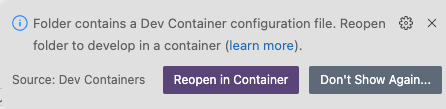
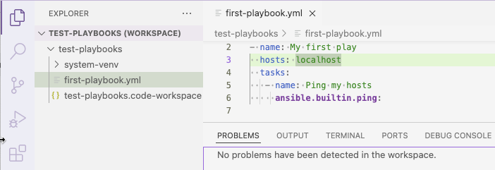
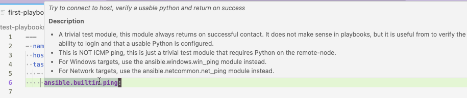
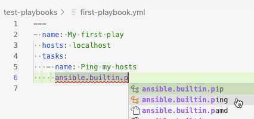
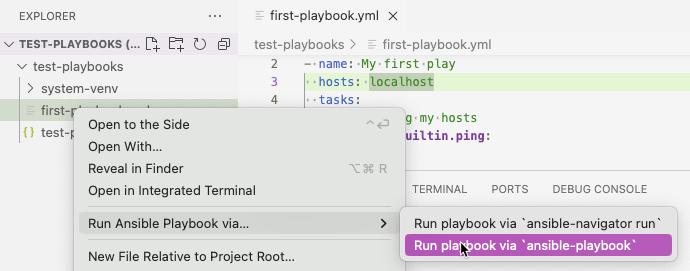
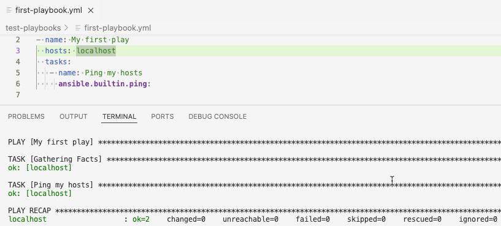
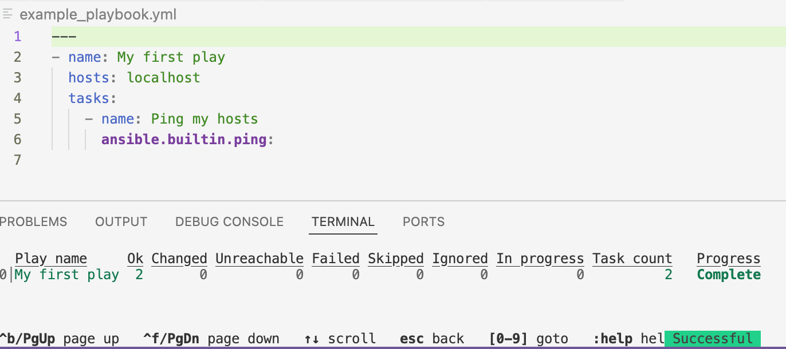
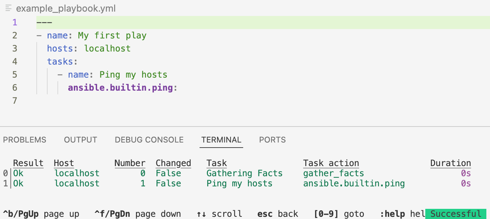

Thank you for your interest in Red Hat Ansible Automation Platform. Ansible Automation Platform is a commercial offering that helps teams manage complex multi-tier deployments by adding control, knowledge, and delegation to Ansible-powered environments.
This guide describes how to develop Ansible automation content and how to use it to run automation jobs from Red Hat Ansible Automation Platform. This document has been updated to include information for the latest release of Ansible Automation Platform.
Providing feedback on Red Hat documentation
If you have a suggestion to improve this documentation, or find an error, you can contact technical support at https://access.redhat.com to open a request.
1. Ansible development tools
Ansible development tools (ansible-dev-tools) is a suite of tools provided with Ansible Automation Platform to help automation creators to
create, test, and deploy playbook projects, execution environments, and collections.
The Ansible VS Code extension by Red Hat integrates most of the Ansible development tools: you can use these tools from the VS Code user interface.
Use Ansible development tools during local development of playbooks, local testing, and in a CI pipeline (linting and testing).
This document describes how to use Ansible development tools to create a playbook project that contains playbooks and roles that you can reuse within the project. It also describes how to test the playbooks and deploy the project on your {AAP} instance so that you can use the playbooks in automation jobs.
1.1. Ansible development tools components
You can operate some Ansible development tools from the VS Code UI when you have installed the Ansible extension, and the remainder from the command line. VS Code is a free open-source code editor available on Linux, Mac, and Windows.
- Ansible VS Code extension
-
This is not packaged with the Ansible Automation Platform RPM package, but it is an integral part of the automation creation workflow. From the VS Code UI, you can use the Ansible development tools for the following tasks:
-
Scaffold directories for a playbook project or a collection.
-
Write playbooks with the help of syntax highlighting and auto-completion.
-
Debug your playbooks with a linter.
-
Execute playbooks with Ansible Core using
ansible-playbook. -
Execute playbooks in an execution environment with
ansible-navigator.
From the VS Code extension, you can also connect to Red Hat Ansible Lightspeed with IBM watsonx Code Assistant.
-
- Command-line Ansible development tools
-
You can perform the following tasks with Ansible development tools from the command line, including the terminal in VS Code:
-
Create an execution environment.
-
Test your playbooks, roles, modules, plugins and collections.
-
2. Workflow for developing automation content
2.1. Workflow
2.1.1. Create
In the create stage, you create a new playbook project locally, using VS Code. The following is a typical workflow:
-
Install and run the Ansible extension in VS Code.
-
Scaffold a playbook project from VS Code.
-
Add playbook files to your project and edit them in VS Code.
2.1.2. Test
-
Debug your playbook with the help of
ansible-lint. -
Select or create an automation execution environment so that your local environment replicates the environment on Ansible Automation Platform.
-
Run your playbooks from VS Code, using
ansible-playbookor usingansible-navigatorwith an execution environment. -
Test your playbooks by running them on an execution environment that replicates your production environment.
2.1.3. Deploy
-
Push your playbooks project to a source control repository.
-
Set up credentials on Ansible Automation Platform to pull from your source control repository and create a project for your playbook repository.
-
If you have created an execution environment, push it to private automation hub.
-
Create a job template on Ansible Automation Platform that runs a playbook from your project, and specify the execution environment that you want to use.
3. Installing Ansible development tools
Red Hat provides two options for installing Ansible development tools.
-
Installation on a RHEL container running inside VS Code. You can install this option on MacOS, Windows, and Linux systems.
-
Installation on your local RHEL system using an RPM (Red Hat Package Manager) package.
3.1. Requirements
To install and use Ansible development tools, you must meet the following requirements. Extra requirements for Windows installations and containerized installations are indicated in the procedures.
-
Python 3.10 or later.
-
VS Code (Visual Studio Code) with the Ansible extension added. See Installing VS Code.
-
For containerized installations, the Micorsoft Dev Containers VS Code extension. See Installing and configuring the Dev Containers extension.
-
A containerization platform, for example Podman, Podman Desktop, Docker, or Docker Desktop.
NoteThe installation procedure for Ansible development tools on Windows covers the use of Podman Desktop only. See Installing Podman Desktop on a Windows machine.
-
You have a Red Hat account and you can log in to the Red Hat container registry at
registry.redhat.io. For information about logging in toregistry.redhat.io, see Authenticating with the Red Hat container registry.
3.1.1. Requirements for Ansible development tools on Windows
If you are installing Ansible development tools on a container in VS Code on Windows, there are extra requirements:
-
Windows Subsystem for Linux(WSL2)
-
Podman Desktop
Installing WSL
-
Install WSL2 without a distribution:
$ `wsl --install --no-distribution`
-
Use
cgroupsv2by disablingcgroupsv1for WSL2:Edit the
%USERPROFILE%/wsl.conffile and add the following lines to forcecgroupv2usage:[wsl2] kernelCommandLine = cgroup_no_v1="all"
Installing Podman Desktop on a Windows machine
-
Install Podman Desktop. Follow the instructions in Installing Podman Desktop and Podman on Windows in the Podman Desktop documentation.
You do not need to change the default settings in the set-up wizard.
-
Ensure the podman machine is using
cgroupsv2:$ podman info | findstr cgroup
-
Test Podman Desktop:
$ podman run hello
Configuring settings for Podman Desktop
-
Add a
%USERPROFILE%\bin\docker.batfile with the following content:@echo off podman %*
This avoids having to install Docker as required by the VS Code
Dev Containerextension. -
Add the
%USERPROFILE%\bindirectory to thePATH.-
Select Settings and search for "Edit environment variables for your account" to display all of the user environment variables.
-
Highlight "Path" in the top user variables box, click Edit and add the path.
-
Click Save to set the path for any new console that you open.
-
3.1.2. Authenticating with the Red Hat container registry
All container images available through the Red Hat container catalog are hosted on an image registry,
registry.redhat.io.
The registry requires authentication for access to images.
To use the registry.redhat.io registry, you must have a Red Hat login.
This is the same account that you use to log in to the Red Hat Customer Portal (access.redhat.com) and manage your Red Hat subscriptions.
|
Note
|
If you are planning to install the Ansible development tools on a container inside VS Code,
you must log in to If you are running Ansible development tools on a container inside VS Code and you want to pull execution environments
or the |
You can use the podman login or docker login commands with your credentials to access content on the registry.
- Podman
-
$ podman login registry.redhat.io Username: my__redhat_username Password: ***********
- Docker
-
$ docker login registry.redhat.io Username: my__redhat_username Password: ***********
For more information about Red Hat container registry authentication, see Red Hat Container Registry Authentication on the Red Hat customer portal.
3.1.3. Installing VS Code
-
To install VS Code, follow the instructions on the Download Visual Studio Code page in the Visual Studio Code documentation.
3.1.4. Installing the VS Code Ansible extension
The Ansible extension adds language support for Ansible to VS Code. It incorporates Ansible development tools to facilitate creating and running automation content.
For a full description of the Ansible extension, see the Visual Studio Code Marketplace.
See Learning path - Getting Started with the Ansible VS Code Extension for tutorials on working with the extension.
To install the Ansible VS Code extension:
-
Open VS Code.
-
Click the Extensions () icon in the Activity Bar, or click , to display the Extensions view.
-
In the search field in the Extensions view, type
Ansible Red Hat. -
Select the Ansible extension and click Install.
When the language for a file is recognized as Ansible, the Ansible extension provides features such as auto-completion, hover, diagnostics, and goto. The language identified for a file is displayed in the Status bar at the bottom of the VS Code window.
The following files are assigned the Ansible language:
-
YAML files in a
/playbooksdirectory -
Files with the following double extension:
.ansible.ymlor.ansible.yaml -
Certain YAML names recognized by Ansible, for example
site.ymlorsite.yaml -
YAML files whose filename contains "playbook":
playbook.ymlorplaybook.yaml
If the extension does not identify the language for your playbook files as Ansible, follow the procedure in Associating the Ansible language to YAML files.
3.1.5. Configuring Ansible extension settings
The Ansible extension supports multiple configuration options.
You can configure the settings for the extension on a user level, on a workspace level, or for a particular directory. User-based settings are applied globally for any instance of VS Code that is opened. Workspace settings are stored within your workspace and only apply when the current workspace is opened.
It is useful to configure settings for your workspace for the following reasons:
-
If you define and maintain configurations specific to your playbook project, you can customize your Ansible development environment for individual projects without altering your preferred setup for other work. You can have different settings for a Python project, an Ansible project, and a C++ project, each optimized for the respective stack without the need to manually reconfigure settings each time you switch projects.
-
If you include workspace settings when setting up version control for a project you want to share with your team, everyone uses the same configuration for that project.
-
Open the Ansible extension settings:
-
Click the 'Extensions' icon in the activity bar.
-
Select the Ansible extension, and click the 'gear' icon and then Extension Settings to display the extension settings.
Alternatively, click to open the Settings page.
-
Enter
Ansiblein the search bar to display the settings for the extension.
-
-
Select the Workspace tab to configure your settings for the current VS Code workspace.
-
The Ansible extension settings are pre-populated. Modify the settings to suit your requirements:
-
Check the box to enable ansible-lint.
-
Check the
Ansible Execution Environment: Enabledbox to use an execution environment. -
Specify the execution environment image you want to use in the Ansible > Execution Environment: image field.
-
To use Red Hat Ansible Lightspeed, check the Ansible > Lightspeed: Enabled box, and enter the URL for Lightspeed.
-
The settings are documented on the Ansible VS Code Extension by Red Hat page in the VisualStudio marketplace documentation.
3.1.6. Associating the Ansible language to YAML files
The Ansible VS Code extension works only when the language associated with a file is set to Ansible. The extension provides features that help create Ansible playbooks, such as auto-completion, hover, and diagnostics.
The Ansible VS Code extension automatically associates the Ansible language with some files. The procedures below describe how to set the language for files that are not recognized as Ansible files.
The following procedure describes how to manually assign the Ansible language to a YAML file that is open in VS Code.
-
Open or create a YAML file in VS Code.
-
Hover the cursor over the language identified in the status bar at the bottom of the VS Code window to open the Select Language Mode list.
-
Select Ansible in the list.
The language shown in the status bar at the bottom of the VS Code window for the file is changed to Ansible.
settings.jsonAlternatively, you can add file association for the Ansible language in your settings.json file.
-
Open the
settings.jsonfile:-
Click to open the command palette.
-
Enter
Workspace settingsin the search box and select Open Workspace Settings (JSON).
-
-
Add the following code to
settings.json.{ ... "files.associations": { "*plays.yml": "ansible", "*init.yml": "yaml", } }
3.1.7. Installing and configuring the Dev Containers extension
If you are installing the containerized version of Ansible development tools, you must install the Microsoft Dev Containers extension in VS Code.
-
Open VS Code.
-
Click the Extensions () icon in the Activity Bar, or click , to display the Extensions view.
-
In the search field in the Extensions view, type
Dev Containers. -
Select the Dev Containers extension from Microsoft and click Install.
If you are using Podman or Podman Desktop as your containerization platform, you must modify the default settings in the Dev Containers extension.
-
Replace docker with podman in the
Dev Containersextension settings:-
In VS Code, open the settings editor.
-
Search for
@ext:ms-vscode-remote.remote-containers.Alternatively, click the Extensions icon in the activity bar and click the gear icon for the
Dev Containersextension.
-
-
Set
Dev > Containers:Docker Pathtopodman. -
Set
Dev > Containers:Docker Compose Pathtopodman-compose.
3.2. Installing Ansible development tools on a container inside VS Code
The Dev Containers VS Code extension requires a .devcontainer file to store settings for your dev containers.
You must create a config file for your dev container and reopen your directory in a container in VS Code.
-
You have installed a containerization platform, for example Podman, Podman Desktop, Docker, or Docker Desktop.
-
You have a Red Hat login and you have logged in to the Red Hat registry at
registry.redhat.io. For information about logging in toregistry.redhat.io, see Authenticating with the Red Hat container registry. -
You have installed VS Code.
-
You have installed the Ansible extension in VS Code.
-
You have installed the Microsoft Dev Containers extension in VS Code.
-
If you are installing Ansible development tools on Windows, launch VS Code and connect to the WSL machine:
-
Click the
Remote() icon. -
In the dropdown menu that appears, select the option to connect to the WSL machine.
-
-
In VS Code, open the directory where you want to store the configuration files for your development container.
-
Create a subdirectory called
.devcontainer. -
In the
.devcontainerdirectory, create a file calleddevcontainer.json.You must use different settings depending on whether you are using Podman or Docker.
-
If you are using Podman or Podman desktop, add the following text to
devcontainer.json:{ "name": "ansible-dev-container-podman", "image": "registry.redhat.io/ansible-automation-platform-25/ansible-dev-tools-rhel8:latest", "containerUser": "root", "runArgs": [ "--cap-add=CAP_MKNOD", "--cap-add=NET_ADMIN", "--cap-add=SYS_ADMIN", "--cap-add=SYS_RESOURCE", "--device", "/dev/fuse", "--security-opt", "seccomp=unconfined", "--security-opt", "label=disable", "--security-opt", "apparmor=unconfined", "--security-opt", "unmask=/sys/fs/cgroup", "--userns=host", "--hostname=ansible-dev-container" ], "customizations": { "vscode": { "extensions": ["redhat.ansible"] } } } -
If you are using Docker or Docker desktop, add the following text to
devcontainer.json:{ "name": "ansible-dev-container-docker", "image": "registry.redhat.io/ansible-automation-platform-25/ansible-dev-tools-rhel8:latest", "containerUser": "root", "runArgs": [ "--privileged", "--device", "/dev/fuse", "--hostname=ansible-dev-container" ], "updateRemoteUserUID": true, "customizations": { "vscode": { "extensions": ["redhat.ansible"] } } }
-
-
Reopen the directory in a container.
-
If VS Code detects that your directory contains the
devcontainer.jsonfile, the following notification appears:Click Reopen in Container.
-
If the notification does not appear, click the
Remote() icon. In the dropdown menu that appears, select Reopen in Container.
-
The Remote () status in the VS Code Status bar displays opening Remote and a notification indicates the progress in opening the container.
When the directory reopens in a container, the Remote () status displays Dev Container: ansible-dev-container.
|
Note
|
The base image for the container is a Universal Base Image Minimal (UBI Minimal) image that uses For information about using |
3.3. Installing Ansible development tools from a package on RHEL
Ansible development tools is bundled in the Ansible Automation Platform RPM (Red Hat Package Manager) package. Refer to the Red Hat Ansible Automation Platform Installation guide documentation for information on installing Ansible Automation Platform.
-
You have installed RHEL.
-
You have registered your system with Red Hat Subscription Manager.
-
You have installed a containerization platform, for example Podman or Docker.
-
Run the following command to check whether Simple Content Access (SCA) is enabled:
$ su subscription-manager statusIf Simple Content Access is enabled, the output contains the following message:
Content Access Mode is set to Simple Content Access.
-
If Simple Content Access is not enabled, attach the Red Hat Ansible Automation Platform SKU:
$ subscription-manager attach --pool=<sku-pool-id>
-
-
Install Ansible development tools with the following command:
$ sudo dnf install --enablerepo=ansible-automation-platform-2.4-for-rhel-8-x86_64-rpms ansible-dev-tools$ sudo dnf install --enablerepo=ansible-automation-platform-2.4-for-rhel-9-x86_64-rpms ansible-dev-tools
Verify that the Ansible development tools components have been installed:
$ rpm -aq | grep ansibleThe output displays the Ansible packages that are installed:
ansible-sign-0.1.1-2.el9ap.noarch ansible-creator-24.4.1-1.el9ap.noarch python3.11-ansible-runner-2.4.0-0.1.20240412.git764790f.el9ap.noarch ansible-runner-2.4.0-0.1.20240412.git764790f.el9ap.noarch ansible-builder-3.1.0-0.2.20240413.git167ed5c.el9ap.noarch ansible-dev-environment-24.1.0-2.el9ap.noarch ansible-core-2.16.6-0.1.20240413.gite636132.el9ap.noarch python3.11-ansible-compat-4.1.11-2.el9ap.noarch python3.11-pytest-ansible-24.1.2-1.el9ap.noarch ansible-lint-6.14.3-4.el9ap.noarch ansible-navigator-3.4.1-2.el9ap.noarch python3.11-tox-ansible-24.2.0-1.el9ap.noarch ansible-dev-tools-2.5-2.el9ap.noarch
On successful installation, you can view the help documentation for ansible-creator:
$ ansible-creator --help usage: ansible-creator [-h] [--version] command ... The fastest way to generate all your ansible content. Positional arguments: command add Add resources to an existing Ansible project. init Initialize a new Ansible project. Options: --version Print ansible-creator version and exit. -h --help Show this help message and exit
4. Creating a playbook project
4.1. Scaffolding a playbook project
The following steps describe the process for scaffolding a new playbook project with the Ansible VS Code extension.
-
Prerequisites
-
You have installed Ansible development tools.
-
You have installed and opened the Ansible VS Code extension.
-
You have identified a directory where you want to save the project.
-
-
Open VS Code.
-
Click the Ansible icon in the VS Code activity bar to open the Ansible extension.
-
Select Get started in the Ansible content creator section.
The Ansible content creator tab opens.
-
In the Create section, click Ansible playbook project.
The Create Ansible project tab opens.
-
In the form in the Create Ansible project tab, enter the following:
-
Destination directory: Enter the path to the directory where you want to scaffold your new playbook project.
NoteIf you enter an existing directory name, the scaffolding process overwrites the contents of that directory. The scaffold process only allows you to use an existing directory if you enable the
Forceoption.-
If you are using the containerized version of Ansible Dev tools, the destination directory path is relative to the container, not a path in your local system. To discover the current directory name in the container, run the
pwdcommand in a terminal in VS Code. If the current directory in the container isworkspaces, enterworkspaces/<destination_directory_name>. -
If you are using a locally installed version of Ansible Dev tools, enter the full path to the directory, for example
/user/<username>/projects/<destination_directory_name>.
-
-
SCM organization and SCM project: Enter a name for the directory and subdirectory where you can store roles that you create for your playbooks.
-
-
Enter a name for the directory where you want to scaffold your new playbook project.
After the project directory has been created, the following message appears in the Logs pane of the Create Ansible Project tab.
In this example, the destination directory name is destination_directory_name.
------------------ ansible-creator logs ------------------
Note: ansible project created at /Users/username/test_project
The following directories and files are created in your project directory:
$ tree -a -L 5 . ├── .devcontainer │ ├── devcontainer.json │ ├── docker │ │ └── devcontainer.json │ └── podman │ └── devcontainer.json ├── .gitignore ├── README.md ├── ansible-navigator.yml ├── ansible.cfg ├── collections │ ├── ansible_collections │ │ └── scm_organization_name │ │ └── scm_project_name │ └── requirements.yml ├── devfile.yaml ├── inventory │ ├── group_vars │ │ ├── all.yml │ │ └── web_servers.yml │ ├── host_vars │ │ ├── server1.yml │ │ ├── server2.yml │ │ ├── server3.yml │ │ ├── switch1.yml │ │ └── switch2.yml │ └── hosts.yml ├── linux_playbook.yml ├── network_playbook.yml └── site.yml
5. Writing and running a playbook with Ansible development tools
5.1. Setting up the Ansible configuration file for your playbook project
When you scaffolded your playbook project, an Ansible configuration file, ansible.cfg,
was added to the root directory of your project.
If you have configured a default Ansible configuration file in /etc/ansible/ansible.cfg,
copy any settings that you want to reuse in your project from your default Ansible configuration file
to the ansible.cfg file in your project’s root directory.
To learn more about the Ansible configuration file, see Ansible Configuration Settings in the Ansible documentation.
5.2. Writing your first playbook
The instructions below describe how Ansible development tools help you to create and run your first playbook in VS Code.
-
You have installed and opened the Ansible VS Code extension.
-
You have opened a terminal in VS Code.
-
You have installed
ansible-devtools.
-
Create a new .yml file in VS Code for your playbook, for example
example_playbook.yml. Put it in the same directory level as the examplesite.ymlfile. -
Add the following example code into the playbook file and save the file. The playbook consists of a single play that executes a
pingto your local machine.--- - name: My first play hosts: localhost tasks: - name: Ping my hosts ansible.builtin.ping:Ansible-lintruns in the background and displays errors in the Problems tab of the terminal. There are no errors in this playbook: -
Save your playbook file.
5.3. Inspecting your playbook
The Ansible VS Code extension provides syntax highlighting and assists you with indentation in .yml files.
The following rules apply for playbook files:
-
Every playbook file must finish with a blank line.
-
Trailing spaces at the end of lines are not allowed.
-
Every playbook and every play require an identifier (name).
5.3.1. Inline help
The Ansible extension also provides inline help when you are editing your playbook file.
-
If you hover your mouse over a keyword or a module name, the Ansible extension provides documentation:
 -
If you begin to type the name of a module, for example
ansible.builtin.ping, the extension provides a list of suggestions.Select one of the suggestions to autocomplete the line.

5.4. Running your playbook
The Ansible VS Code extension provides two options to run your playbook:
-
ansible-playbookruns the playbook on your local machine using Ansible Core. -
ansible-navigatorruns the playbook in an execution environment in the same manner that Ansible Automation Platform runs an automation job. You specify the base image for the execution environment in the Ansible extension settings.
5.4.1. Running your playbook with ansible-playbook
-
To run a playbook, right-click the playbook name in the Explorer pane, then select .

The output is displayed in the Terminal tab of the VS Code terminal.
The ok=2 and failed=0 messages indicate that the playbook ran successfully.

5.4.2. Running your playbook with ansible-navigator
-
In the Ansible extension settings, enable the use of an execution environment in Ansible Execution Environment > Enabled.
-
Enter the path or URL for the execution environment image in Ansible > Execution Environment: Image.
-
To run a playbook, right-click the playbook name in the Explorer pane, then select .
The output is displayed in the Terminal tab of the VS Code terminal. The Successful status indicates that the playbook ran successfully.

-
Enter the number next to a play to step into the play results. The example playbook only contains one play. Enter
0to view the status of the tasks executed in the play.
Type the number next to a task to review the task results.
For more information on running playbooks with automation content navigator, see Executing a playbook from automation content navigator in the Using content navigator Guide.
5.4.3. Working with execution environments
You can view the automation execution environments provided by Red Hat in the Red Hat Ecosystem Catalog.
Click on an execution environment for information on how to download it.
-
Log in to
registry.redhat.ioif you have not already done so.NoteIf you are running Ansible development tools on a container inside VS Code and you want to pull execution environments or the
devcontainerto use as an execution environment, you must log in toregistry.redhat.iofrom a terminal prompt within thedevcontainerinside VS Code. -
Using the information in the Red Hat Ecosystem Catalog, download the execution environment you need.
For example, to download the minimal RHEL 8 base image, run the following command:
$ podman pull registry.redhat.io/ansible-automation-platform-25/ee-minimal-rhel9
You can build and create custom execution environments with ansible-builder.
For more information about working with execution environments locally, see
Creating and using execution environments.
After customizing your execution environment, you can push your new image to the container registry in automation hub. See Publishing an automation execution environment in the Creating and using execution environments documentation.
5.5. Debugging your playbook
5.5.1. Error messages
The following playbook contains multiple errors:
- name:
hosts: localhost
tasks:
- name:
ansible.builtin.ping:
The errors are indicated with a wavy underline in VS Code. Hover your mouse over an error to view the details:
The errors are listed in the Problems tab of the VS Code terminal. Playbook files that contain errors are indicated with a number in the Explorer pane:
$[0].tasks[0].name None is not of type 'string' indicates that the playbook does not have a label.
5.6. Testing your playbooks
To test your playbooks in your project, run them in a non-production environment such as a lab setup or a virtual machine.
Automation content navigator (ansible-navigator) is a text-based user interface (TUI) for developing and troubleshooting Ansible content with execution environments.
Running a playbook using ansible-navigator generates verbose output that you can inspect to check whether the playbook is running the way you expected.
You can specify the execution environment that you want to run your playbooks on, so that your tests replicate the production setup on Ansible Automation Platform:
-
To run a playbook on an execution environment, run the following command from the terminal in VS Code:
$ ansible-navigator run <playbook_name.yml> -eei <execution_environment_name>
For example, to execute a playbook called
site.ymlon the Ansible Automation Platform RHEL 9 minimum execution environment, run the following command from the terminal in VS Code.ansible-navigator run site.yml --eei ee-minimal-rhel8
The output is displayed in the terminal. You can inspect the results and step into each play and task that was executed.
For more information about running playbooks, refer to Running Ansible playbooks with automation content navigator in the Using content navigator guide.
6. Publishing and running your playbooks in Ansible Automation Platform
The following procedures describe how to deploy your new playbooks in your instance of Ansible Automation Platform so that you can use them to run automation jobs.
6.1. Saving your project in SCM
Save your playbook project as a repository in your source control management system, for example GitHub.
-
Initialize your project directory as a git repository.
-
Push your project up to a source control system such as GitHub.
6.2. Running your playbook in Ansible Automation Platform
To run your playbook in Ansible Automation Platform, you must create a project in automation controller for the repository where you stored your playbook project. You can then create a job template for each playbook from the project.
-
In a browser, log in to automation controller.
-
Configure a Source Control credential type for your source control system if necessary. See the Creating new credentials section of the Automation controller user guide for more details.
-
In automation controller, create a project for the GitHub repository where you stored your playbook project. Refer to the Projects chapter of the Automation controller user guide.
-
Create a job template that uses a playbook from the project that you created. Refer to the Job Templates chapter of the Automation controller user guide.
-
Run your playbook from automation controller by launching the job template. Refer to the Launching a job template section of the Automation controller user guide.
7. Developing collections
Collections are a distribution format for Ansible content that can include playbooks, roles, modules, and plugins. Red Hat provides Ansible Content Collections on Ansible automation hub that contain both Red Hat Ansible Certified Content and Ansible validated content.
If you have installed private automation hub, you can create collections for your organization and push them to private automation hub so that you can use them in job templates in Ansible Automation Platform. You can use collections to package and distribute plug-ins. These plug-ins are written in Python.
You can also create collections to package and distribute Ansible roles, which are expressed in YAML. You can also include playbooks and custom plug-ins that are required for these roles in the collection. Typically, collections of roles are distributed for use within your organization.
8. Creating a collection for distributing roles
An Ansible role is a self-contained unit of Ansible automation content that groups related tasks and associated variables, files, handlers, and other assets in a defined directory structure.
You can run Ansible roles in one or more plays, and reuse them across playbooks. Invoking roles instead of tasks simplifies playbooks. You can migrate existing standalone roles into collections, and push them to private automation hub to share them with other users in your organization. Distributing roles in this way is a typical way to use collections.
With Ansible collections, you can store and distribute multiple roles in a single unit of reusable automation. Inside a collection, you can share custom plug-ins across all roles in the collection instead of duplicating them in each role.
You must move roles into collections if you want to use them in Ansible Automation Platform.
You can add existing standalone roles to a collection, or add new roles to it. Push the collection to source control and configure credentials for the repository in Ansible Automation Platform.
8.1. Planning your collection
Organize smaller bundles of curated automation into separate collections for specific functions, rather than creating one big general collection for all of your roles.
For example, you could store roles that manage the networking for an internal system called myapp in a company_namespace.myapp_network collection,
and store roles that manage and deploy networking in AWS in a collection called company_namespace.aws_net.
8.2. Prerequisites
-
You have installed VS Code and the Ansible extension.
-
You have installed the Microsoft Dev Containers extension in {VS Code.
-
You have installed Ansible development tools.
-
You have installed a containerization platform, for example Podman, Podman Desktop, Docker, or Docker Desktop.
-
You have a Red Hat account and you can log in to the Red Hat container registry at
registry.redhat.io. For information about logging in toregistry.redhat.io, see Authenticating with the Red Hat container registry.
8.3. Scaffolding a collection for your roles
You can scaffold a collection for your roles from the Ansible extension in VS Code.
-
Open VS Code.
-
Navigate to the directory where you want to create your roles collection.
-
Click the Ansible icon in the VS Code activity bar to open the Ansible extension.
-
Select Get started in the Ansible content creator section.
The Ansible content creator tab opens.
-
In the Create section, click Ansible collection project.
The Create new Ansible project tab opens.
-
In the form in the Create Ansible project tab, enter the following:
-
Namespace: Enter a name for your namespace, for example
company_namespace. -
Collection: Enter a name for your collection, for example,
myapp_network. -
Init path: Enter the path to the directory where you want to scaffold your new collection.
If you enter an existing directory name, the scaffolding process overwrites the contents of that directory. The scaffold process only allows you to use an existing directory if you enable the Force option.
-
If you are using the containerized version of Ansible development tools, the destination directory path is relative to the container, not a path in your local system. To discover the current directory name in the container, run the pwd command in a terminal in VS Code. If the current directory in the container is
workspaces, enterworkspaces/<current_project>/collections. -
If you are using a locally installed version of Ansible Dev tools, enter the full path to the directory, for example
/user/<username>/path/to/<collection_directory>.
-
-
-
Click Create.
After the collection has been created, the following message appears in the Logs pane of the Create Ansible collection tab.
--------------------- ansible-creator logs ---------------------
Note: collection company_namespace.myapp_network created at /path/to/collections/directory
The following directories and files are created in your collections/ directory:
├── .devcontainer ├── .github ├── .gitignore ├── .isort.cfg ├── .pre-commit-config.yaml ├── .prettierignore ├── .vscode ├── CHANGELOG.rst ├── CODE_OF_CONDUCT.md ├── CONTRIBUTING ├── LICENSE ├── MAINTAINERS ├── README.md ├── changelogs ├── devfile.yaml ├── docs ├── extensions ├── galaxy.yml ├── meta ├── plugins ├── pyproject.toml ├── requirements.txt ├── roles ├── test-requirements.txt ├── tests └── tox-ansible.ini
8.4. Migrating existing roles to your collection
The directory for a standalone role has the following structure. Your role might not contain all of these directories.
my_role
├── README.md
├── defaults
│ └── main.yml
├── files
├── handlers
│ └── main.yml
├── meta
│ └── main.yml
├── tasks
│ └── main.yml
├── templates
├── tests
│ ├── inventory
│ └── test.yml
└── vars
└── main.yml
An Ansible role has a defined directory structure with seven main standard directories.
Each role must must include at least one of these directories.
You can omit any directories the role does not use.
Each directory contains a main.yml file.
-
If necessary, rename the directory that contains your role to reflect its content, for example,
acl_configortacacs.Roles in collections cannot have hyphens in their names. Use the underscore character (
_) instead. -
Copy the roles directories from your standalone role into the
roles/directory in your collection.For example, in a collection called
myapp_network, add your roles to themyapp_network/roles/directory. -
Copy any plug-ins from your standalone roles into the
plugins directory/for your new collection. The collection directory structure resembles the following.company_namespace └── myapp_network ├── ... ├── galaxy.yml ├── docs ├── extensions ├── meta ├── plugins ├── roles │ ├── acl_config │ │ ├── README.md │ │ ├── defaults │ │ ├── files │ │ ├── handlers │ │ ├── meta │ │ ├── tasks │ │ ├── templates │ │ ├── tests │ │ └── vars │ └── tacacs │ ├── README.md │ ├── default │ ├── files │ ├── handlers │ ├── meta │ ├── tasks │ ├── templates │ ├── tests │ └── vars │ ├── run ├── ... ├── tests └── varsThe
runrole is a default role directory that is created when you scaffold the collection. -
Update your playbooks to use the fully qualified collection name (FQDN) for your new roles in your collection.
Not every standalone role will seamlessly integrate into your collection without modification of the code.
For example, if a third-party standalone role from Galaxy that contains a plug-in uses the module_utils/ directory,
then the plug-in itself has import statements.
8.5. Creating a new role in your collection
-
To create a new role, copy the default
runrole directory that was scaffolded when you created the collection. -
Define the tasks that you want your role to perform in the
tasks/main.ymlfile. If you are creating a role to reuse tasks in an existing playbook, copy the content in the tasks block of your playbook YAML file. Remove the whitespace to the left of the tasks. Useansible-lintin VS Code to check your YAML code. -
If your role depends on another role, add the dependency in the
meta/main.ymlfile.
8.6. Adding documentation for your roles collection
It is important to provide documentation for your roles so that other users understand what your roles do and how to use them.
8.6.1. Documenting your roles
When you scaffolded your collection directory, a README.md file was added in the role directory.
Add your documentation for your role in this file.
Provide the following information in the README.md files for every role in your collection:
-
Role description: A brief summary of what the role does
-
Requirements: List the collections, libraries, and required installations
-
Dependencies
-
Role variables: Provide the following information about the variables your role uses.
-
Description
-
Defaults
-
Example values
-
Required variables
-
-
Example playbook: Show an example of a playbook that uses your role. Use comments in the playbook to help users understand where to set variables.
The README.md file in controller_configuration.ad_hoc_command_cancel is an example of a role with standard documentation:
8.6.2. Documenting your collection
In the README.md file for your collection, provide the following information:
-
Collection description: Describe what the collection does.
-
Requirements: List required collections.
-
List the roles as a component of the collection.
-
Using the collection: Describe how to run the components of the collection.
-
Add a troubleshooting section.
-
Versioning: Describe the release cycle of your collection.
8.7. Publishing your collection in private automation hub
-
Prerequisite
-
Package your collection into a tarball. Format your collection file name as follows:
-
<my_namespace-my_collection-x.y.z.tar.gz>
For example, company_namespace-myapp_network-1.0.0.tar.gz
-
Create a namespace for your collection in private automation hub. See Creating a namespace in the Managing automation content guide.
-
Optional: Add information to your namespace. See Adding additional information and resources to a namespace in the Managing automation content guide.
-
Upload your roles collections tarballs to your namespace. See Uploading collections to your namespaces in the Managing automation content guide.
-
Approve your collection for internal publication. See Uploading collections to your namespaces in the Managing automation content guide.
8.7.1. Using your collection in projects in Red Hat Ansible Automation Platform
To use your collection in automation controller, you must add your collection to an execution environment and push it to private automation hub.
The following procedure describes the workflow to add a collection to an execution environment. Refer to Customizing an existing automation executions environment image in the Creating and using execution environments guide for the commands to execute these steps.
-
You can pull an execution environment base image from automation hub, or you can add your collection to your own custom execution environment.
-
Add the collections that you want to include in the execution environment.
-
Build the new execution environment.
-
Verify that the collections are installed in the execution environment.
-
Tag the image and push it to private automation hub.
-
Pull your new image into your automation controller instance.
-
The playbooks that use the roles in your collection must use the fully qualified domain name (FQDN) for the roles.